Invocação Remota de Procedimentos - RPC
Em 1984, Birrel e Nelson1 introduziram o mecanismo de Invocação Remota de Procedimentos (Remote Procedure Calls), que permite que processos façam invocações de procedimentos remotos!
Óbvio, a inovação não está na capacidade de uma máquina conversar com outra, mas em como esta conversa acontece, do ponto de vista do programador.
Por exemplo, RPC permite que se procure a substring apontada por c dentro da string apontada por a, a partir da posição 3, usando x = substring(a,3,c); mas com o invocador da função em um processo e a implementação da função propriamente dita, em outro, possivelmente em outra máquina.
Stubs
Se o que queremos é colocar o código da função substring em um outro processo e executá-lo como se estivéssemos no mesmo processo que faz a invocação, precisamos pensar em várias questões, sendo a principal o fato de que, embora seja simulada a invocação local, "por debaixo do capô" há o uso sockets para a comunicação com o processo remoto.
Esta simulação usará código extra, que finge implementar substring para o invocador mas delega ao código remoto o trabalho real da busca.
Este código extra é conhecido como stub, ou para ser mais preciso, stub cliente, que faz parte do processo invocando a operação, e stub servidor, que faz parte do processo executando a operação invocada2.
Assim, o cliente invoca a função no stub cliente, achando que é a função que quer executar. O stub cliente faz o marshaling 3 dos parâmetros e usa o SO para transferir os dados via rede para o stub servidor. Quando recebe a resposta do servidor, o stub cliente retorna a mesma resposta, como se tivesse sido calculada localmente. Já o stub servidor fica esperando o contato do cliente. Quando acontece, faz o unmarshalling dos dados, invoca a função localmente na aplicação servidor e pega o resultado, que retorna ao cliente.
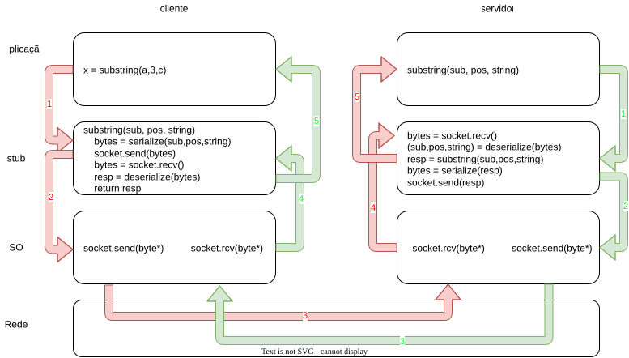
| Stub cliente | Stub servidor |
|---|---|
1. invoca substring no stub |
1. retorna o resultado para o stub |
| 2. conecta-se ao servidor, envia parâmetros e especifica a função | 2. envia resultado serializado para cliente |
| 3. transmite os dados serializados | transmite resposta serializada |
| 4. desserializa parâmetros | 4. desserializa os parâmetros |
5. invoca a função substring localmente |
5. retorna o resultado para o invocador |
Transparência
A grande vantagem do uso de RPC é para o programador, pois se pode escrever código distribuído "igual" ao não-distribuído, certo?
Isto é, interface baseada em procedimentos e sem a necessidade de detalhar portas, sockets, e representação de dados. Ou seja, tudo é transparente!
Como já discutimos, vários fatores trabalham contra a transparência em sistemas distribuídos.
Em específico quanto à transparência dada pelo RPC, também temos limitações.
Antes de nos aprofundarmos, lembremos como uma invocação de funções acontece normalmente dentro de um único processo.4
O código x = substring(a,3,c);, que procura *c em *a, é traduzido nos seguintes passos em linguagem de máquina:
- coloque o valor de
cna pilha - coloque
3na pilha - coloque o valor de
ana pilha - coloque o endereço de retorno na pilha (junto com outros dados de controle)
- salte para
substringajustando o instruction pointer - ... procure substring ...
- coloque o resultado no acumulador
- limpe a pilha
- salte de volta recuperando o endereço de retorno da pilha e ajustando o IP
- coloque resultado em
x
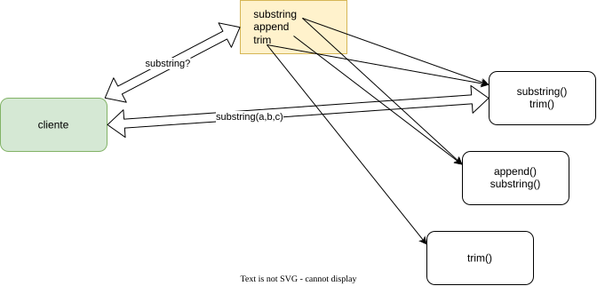
O problema é que há uma distinção clara em pelo menos dois processos e se pensarmos no código descrito acima, temos que entender que
- processos independentes não compartilham um espaço de endereçamento, e
- processos independentes não compartilham uma pilha.

Assim, como fica a passagem de parâmetro por referência, uma vez que o stub servidor não pode usar endereços do espaço de endereçamento do cliente? Algumas abordagens para simular a passagem por referência são possíveis. Por exemplo, o valor apontado pelo ponteiro é passado para o servidor, que armazena o valor e alguma posição de memória e passa o endereço de tal posição para a função invocada.
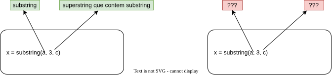
Contudo, a modificação do valor pela função não reflete imediatamente no invocador; tais valores têm que ser copiados novamente e usados para sobrescrever o valor original no cliente. Além disso, esta abordagem só é possível se o valor apontado for delimitado, o que nem sempre é fácil de determinar. Por exemplo, se o ponteiro for para o primeiro elemento de uma lista, o que deve ser copiado para o servidor? Só o primeiro elemento? Toda a lista? Como ensinar para o framework RPC o que é "toda" a lista?
Java "resolve" o problema da passagem de parâmetro por referência passando todo o grafo do objeto passado como parâmetro para o servidor. Isto é, além de serializar o objeto apontado no parâmetro, se o mesmo aponta para outros objetos, estes também serão serializados e transferidos; o servidor irá então reconstruir todo o grafo e passar para o método sendo invocado. É muito fácil ver que esta abordagem pode se tornar inviável rapidamente. Quando for o caso, Java permite marcar objetos como remotos e, em vez de serializar este objeto e enviar para o servidor, envia informação suficiente para que o servidor possa invocar métodos em tal objeto no cliente, tornando nebulosa a definição de quem é quem.
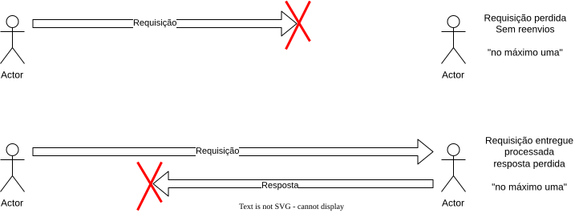
Outros fatores também trabalham contra a transparência para o desenvolvedor.
Descoberta de Serviços
Por exemplo, mesmo que o socket seja ocultado, ele ainda existe e precisa de informações sobre onde se conectar (endereço e porta), que de alguma forma deve ser passada para o framework de RPC. Esta informação pode ser configurada a priori por um administrador de sistemas, mas requer atualizações sempre que a localização do serviço for alterada ou novos servidores adicionados. Mais interessante seria um mecanismo que permitisse uma indireção para o serviço; o próprio DNS pode ser uma opção inicial, mas um serviço dedicado pode ser mais apropriado, pois permite descobrir serviços e não apenas servidores.
Birrel e Nelson propuseram um serviço de Páginas Amarelas, no qual clientes podem questionar quem oferece um certo serviço e serem redirecionados automaticamente. Esta abordagem tem seus próprios problemas, como por exemplo determinar quem administra o serviço para incluir novos servidores. E como determinar qual serviço acessar, caso haja múltiplas opções de servidores.
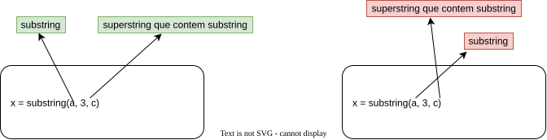
Apesar dos problemas, páginas amarelas foram usadas em abordagens muito mais recentes para descobertas de serviços, por exemplo Web Services Discovery, que permite a descoberta de Web Services em escala global, e Java Remote Object Registry que permite a descoberta de objetos remotos Java.
Tratamento de Exceções
Uma vez que a invocação é remota, há sempre o risco de problemas de comunicação entre cliente e servidor.
Logo, é necessária a introdução de código para tratamento de erros deste tipo, o que absolutamente não era necessário no caso do código centralizado.
Assim, o que era um simples x = substring(a,3,c); passa para algo assim (em uma linguagem fictícia):
1 2 3 4 5 6 7 8 9 10 11 12 13 | |
O que nos leva novamente ao ponto sobre não haver transparência total em sistemas distribuídos... e esta falta de transparência pode ser muito mais complicada do que simplesmente adicionar try e catch ao seu código.
Mais que isso, imagine que a operação sendo executada altere algum estado no servidor. Se esta fosse uma operação local, cada invocação da operação corresponderia a exatamente uma execução da operação, na ausência de falhas. No caso de falhas, se o processo quebra como um todo, no seu reinício, pode-se identificar se a operação foi ou não executada e aplicar ações corretivas. Mas e no caso remoto?
Reexecuções
No caso da operação distribuída, se o servidor quebra, isso levará a um erro ser percebido do lado do cliente como uma falha na conexão. Se o cliente havia invocado uma operação mas percebeu o erro antes de receber uma confirmação de sua execução, isto pode indicar que:
- (i) ou a requisição nunca foi recebida pelo servidor e, portanto, não foi executada,
- (ii) ou a execução foi recebida e executada, mas a resposta não foi enviada.
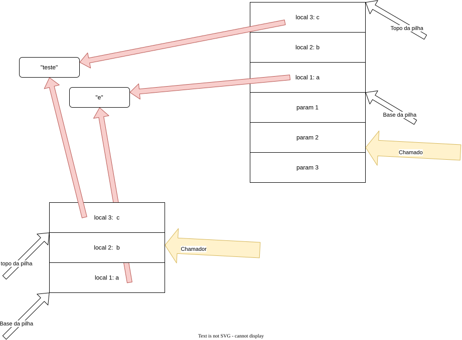
O cliente tem que tratar o erro, mas como? Se a operação precisa ser executada a qualquer custo, o cliente pode retentá-la quando conseguir novo contato com o servidor (ou mesmo com outro). Neste caso, se o que de fato aconteceu foi a situação (i), então retentar garantirá que a operação seja executada pelo servidor, mesmo que várias tentativas sejam necessárias. Contudo, se o que ocorreu foi a situação (ii), então reenviar a operação levará a mesma a ser executada múltiplas vezes, o que pode ou não ser ok. Esta abordagem é o que garantirá que a execução acontece pelo menos 1 vez.
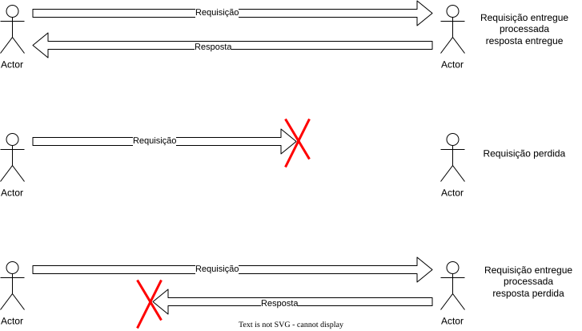
Imagine que a operação se tratasse de uma transferência de saldo, ou a encomenda de um caminhão carregado de algum produto caro. Neste caso, reexecutar não parece ser uma opção. Neste caso, talvez a melhor opção seja não retentar a operação, o que levará a zero execuções na situação (ii) e uma execução na situação (i), ou seja, a no máximo uma execução. Uma situação em que esta abordagem é claramente preferível é a entrega de quadros em um stream de vídeo ou áudio, devido à importância da operação ser atrelada ao momento de sua execução.
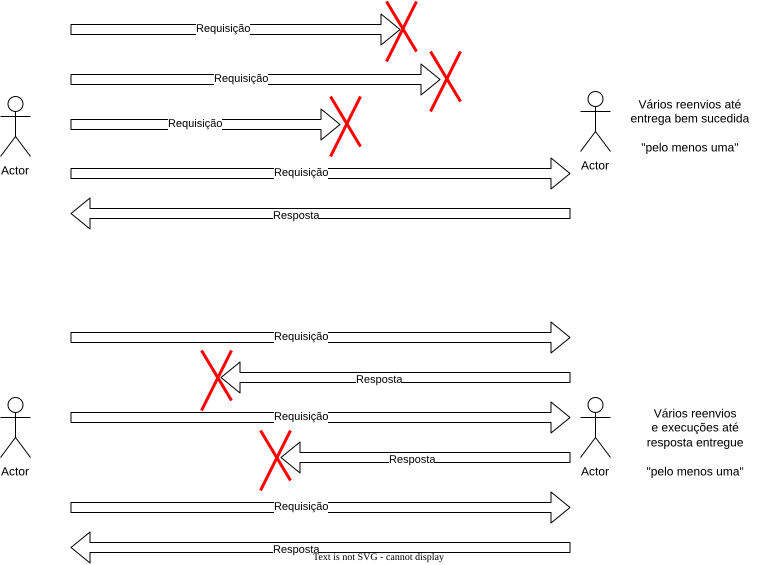
Quantidade de execuções
- No máximo uma - não retentar
- Exatamente uma - impedir que falhas aconteçam

- Pelo menos uma - retentar até ter confirmação
Nenhuma destas abordagens é igual ao que é garantido na versão centralizada e que é provavelmente o que todo desenvolvedor desejaria para suas invocações de métodos, que fossem executados exatamente uma vez. Garantir esta semântica na comunicação é muito difícil, pois é impossível ter certeza de que uma mensagem não foi processada pelo servidor ainda. De fato, é impossível ter certeza se o servidor falhou; pode ter sido apenas uma falha na comunicação.
Como é impossível evitar falhas, se uma operação deve ser executada, ela deve ser retentada. Mas ela não pode ser repetida, então a alternativa é tornar as operações idempotentes, o que quer dizer que o efeito desejado é alcançado pela primeira execução e que execuções seguintes não alteram o estado.
Operações idempotentes
Múltiplas execuções têm o mesmo efeito que uma execução.
- Exemplo:
x = 10 - Anti-exemplo:
x = x+1.
Infelizmente não é trivial programar para idempotência, principalmente se o servidor for acessado concorrentemente por múltiplos clientes, tornando seu estado uma região crítica.
Concorrência no servidor
É importante notar que um servidor não está obrigado a atender requisições de somente um cliente. Logo, se múltiplos clientes acessam o mesmo servidor, o estado do servidor será "compartilhado" pelos vários clientes e passos são necessários para que o comportamento no acesso deste estado seja coerente com a especificação.
Pense por exemplo em um servidor que conta o número de acessos feitos por clientes. O incremento do contador deve ser considerado uma região crítica, caso múltiplos threads tratem as requisições dos clientes, o que já vimos ser uma boa ideia. Claro que dificilmente seu servidor seria algo tão simples assim. Em vez disso, ele provavelmente executará lógicas complicadas, como por exemplo, armazenar o estado de contas bancárias e, neste caso, as funções expostas por RPC incluiríam a operação transferir saldo de A para B, o que nos leva a mais um problema interessante, o do risco de reexecuções.
Além disso, o servidor provavelmente suportará diversas operações e por isso deverá identificar qual a operação sendo requisitada. Isto é feito por um dispatcher, que demultiplexa as operações requisitadas; o dispatcher pode, em algumas arquiteturas, ser independente do skeleton em si.
Interface Definition Language
Há diversas opções de frameworks para RPC, com diferentes características, focos, e garantias. Alguns são parte da linguagem e outros são implementados como bibliotecas. Alguns suportam múltiplas linguagens e alguns apenas uma.
Suporte a RPC na linguagem
- Sem RPC: C, C++, Java < 5.0 (1.5), Python
- Com RPC: Java, Go, Erlang, Scala, Haskell
- Ambientes heterogêneos: Thrift, gRPC, Akka, SOAP
Frameworks mais modernos permitem escolher a forma de serialização dos dados, se legível para humanos ou binário, se o transporte é via HTTP ou protocolo mais baixo nível, se os dados trafegam abertamente ou se faz uso de comunicação criptografada (SSL). Outros permitem escolher semântica de execução entre no máximo uma e pelo menos uma, e há até quem prometa exatamente uma. Mas todos os frameworks tem algumas características em comum e uma delas é o uso de uma Linguagem de Definição de Interface (IDL).
Uma IDL é a linguagem pela qual desenvolvedor define quais as operações (funções, procedimentos, métodos) serão acessíveis via RPC e quais os seus operandos. Há várias IDL definidas, para os diversos frameworks disponíveis.
A imagem a seguir mostra um exemplo genérico da criação cliente e servidor usando um framework RPC genérico, inclusive o processamento da definição feita em IDL do serviço e a junção deste código gerado ao código escrito pelo desenvolvedor.

O fluxo de processamento é o seguinte:
- Arquivo em IDL é compilado por um compilador IDL e gera diversos arquivos:
- stub cliente - código que implementa a interface, com código para repassar invocações para o servidor.
- stub servidor (skeleton) - código que atende a conexões do stub cliente e repassa para a implementação própria da função.
- conversão de dados - código que serializa e deserializa dados para serem trafegados de e para o servidor
- cabeçalhos - definições da interface na linguagem de desenvolvimento da aplicação; se linguagem C, por exemplo, estes serão arquivos
.h, se em Java, então estes serão arquivos.java, com definição deinterface.
- O código cliente é compilado e gera o cliente, que deve
- inicializar a infraestrutura RPC
- Tipo de transporte
- SSL?
- Localizar servidor
- Lidar com falhas
- inicializar a infraestrutura RPC
- O código servidor é compilado e gera o servidor, que deve
- exportar e localizar serviços (serviço de nomeação)
- Gerenciamento de portas
- Conexões
Variações de processamento
Invocações de procedimentos e métodos são geralmente síncronas, o que quer dizer que o chamador do procedimento normalmente espera a conclusão do procedimento para continuar a executar.
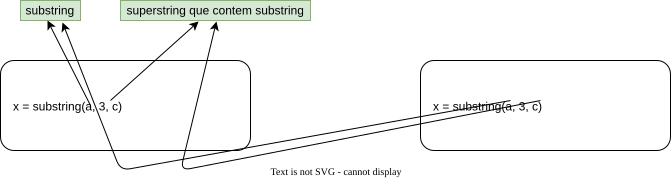
Essa abordagem é necessária quando o chamador precisa do resultado do procedimento para continuar, mas deixa de fazer sentido quando ou o procedimento não tem um resultado ...
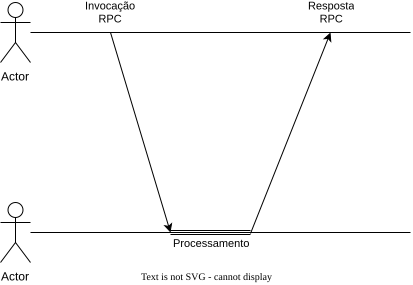
... ou quando o resultado só será necessário mais tarde, podendo ser recebido via um callback.
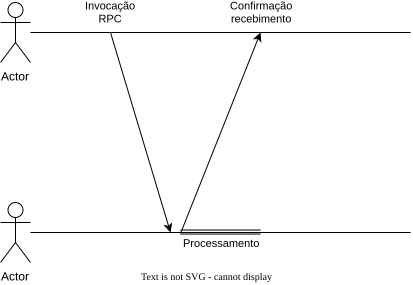
Independentemente de qual abordagem for utilizada, ambos os processos, chamador e chamado, precisam estar ativos ao mesmo tempo para que a comunicação aconteça, isto é, os processos estão acoplados no tempo. Nas seções seguintes veremos como este requisito pode ser relaxado, permitindo que os processos sejam desacoplados no tempo.